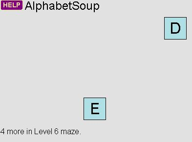
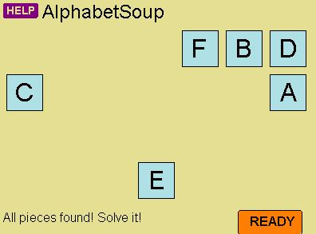
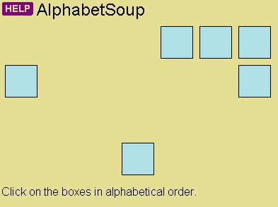
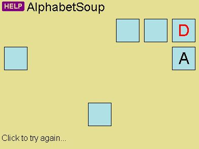
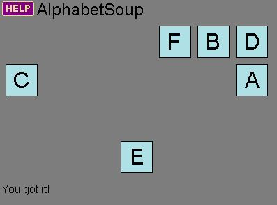

|  |
- Each round, you will find letters distributed throughout the maze.
- As you find the letters, they will light up in the puzzle.
- The number of letters increases for each level. Level 1 has only the letter A.
- This example is from Level 6, using the letters A through F.
|
|  |
- When you have found all the letters, the puzzle will light up, and the READY button will appear.
- Look carefully at the puzzle, and notice the placement of each letter.
- When you're ready to try to recreate it, click the READY button.
|
|  |
- Now the boxes are empty, and you will need to click them in alphabetical order.
|
|  |
- If you mess up, the box will display the letter in red.
- You will be given as many chances as you need, so click to see the puzzle again.
|
|  |
- When you solve the puzzle, it will darken until the end of the round.
|